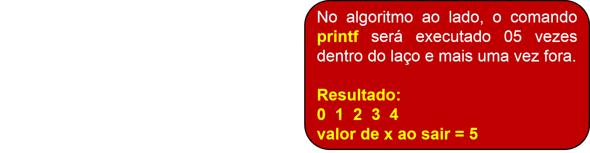

Prof. Dr. Raulcézar Alves
raulcezar@gmail.com
Exercícios
04: A empresa de software XPTO deseja calcular quanto ela vai gastar com sua folha de pagamento este mês. Para auxiliar o pessoal do RH a fazer este cálculo, você deve construir um programa que, dado o número de funcionários da empresa, fornecido pelo usuário do RH, o programa deve requisitar a ele o cargo e o número de horas extras de cada funcionário. O cálculo do salário é dado de acordo com a tabela abaixo:| Cargo | Salário Base | % hora extra |
| 1- Programado Junior | R$ 1.500,00 | 1% |
| 2- Programado Sênior | R$ 2.000,00 | 2% |
| 3- Analista de TI | R$ 2.500,00 | 3% |
| 4- Arquiteto de Software | R$ 3.000,00 | 4% |
Exercícios
05: A mesma empresa de software XPTO, agora necessita de uma nova funcionalidade. Ela deseja um programa que, dado o numero de funcionários da empresa, fornecido pelo usuário do RH, o programa requisite o cargo e quanto foi o salario bruto (salario total de cada mês já considerando a soma do salário base com horas extras) de cada funcionário em cada um dos meses do ano (1-janeiro, 2-fevereiro,...,12-dezembro).Após todo o processamento, a saída do programa deve informar ao usuário do RH, a média de salário mensal por cargo (Programador Junior, Programador Sênior, Analista de TI e Arquiteto de Software).Estruturas de Repetição ENQUANTO (Portugol)
- Essa estrutura de repetição é utilizada quando não se sabe o número de vezes que um trecho do algoritmo deve ser repetido, embora também possa ser utilizada quando se conhece este número.
Estruturas de Repetição ENQUANTO (Portugol)
- Essa estrutura baseia-se na análise de uma condição. A repetição será feita enquanto a condição for verdadeira.
- Existem situações em que o teste condicional da estrutura de repetição, que fica no início, resulta em um valor falso. Nesses casos, os comandos de dentro da estrutura de repetição não serão executados.
Estruturas de Repetição ENQUANTO (Portugol)
- Exemplo
Estruturas de Repetição ENQUANTO (C)
Estruturas de Repetição ENQUANTO (C)
Exemplo Exercícios
- 01: Programa que lê números do teclado até que um número zero seja digitado. O programa deve calcular a soma desses valores e imprime-la na tela no final.
Exercícios
- 02: Programa que lê números do teclado até que um número zero seja digitado. O programa deve retornar a quantidade de números positivos e negativos que foram digitados.
Exercícios
- 03: Programa que lê N números, e ao final mostra a média.
Exercícios
- 04: Faça um programa que receba o 13º salário de um funcionário chamado Carlos. Sabe-se que outro funcionário, João, tem salário equivalente a um terço do salário de Carlos. Ambos aplicarão o 13º em fundos de investimento. Carlos aplicará em Poupança que rende 2% ao mês, enquanto João em Renda Fixa a 5% ao mês. O programa deve calcular quantos meses levará para o investimento de João se igualar ou ultrapassar o de Carlos e quanto cada um possuirá na conta.
Exercícios
- 05: Faça um programa que requisite a entrada de dois valores, M e N, repetidas vezes enquanto M <= N utilizando a estrutura ENQUANTO (while). A cada fez que ele entrar no laço, faça o somatório dos valores de M a N utilizando outro laço com a estrutura PARA (for) e imprima o resultado.